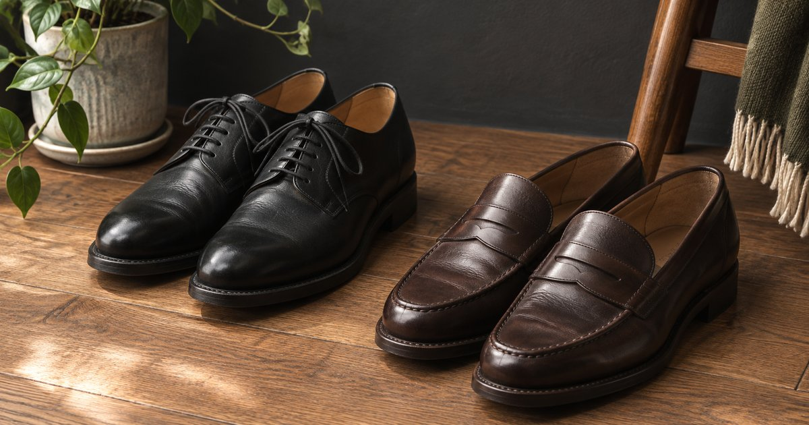

初めての革靴の選び方。デザイン・色・素材の基本

※この記事にはアフィリエイトリンクが含まれています（広告について）。
就職や転職、結婚式など、革靴が必要になる場面は意外と多いもの。1足目は「どんな場面にも使える」ことを優先すると、長く活躍してくれます。
デザインの種類
ストレートチップ
つま先に一本の横線が入った、最もフォーマルなデザイン。ビジネスはもちろん、冠婚葬祭にも使えます。1足目に迷ったらこれです。
プレーントゥ
つま先に装飾のないシンプルなデザイン。ビジネスにも使え、カジュアルな服装にもなじみやすいのが特徴です。
ローファー
靴ひもがなく、脱ぎ履きしやすいデザイン。休日のきれいめカジュアルに向いていますが、フォーマルな場には不向きです。
色は黒、休日用なら茶も
ビジネスやフォーマルに使うなら黒が基本。休日のコーデ中心なら、デニムやチノパンになじむダークブラウンも使いやすい色です。
素材：本革と合成皮革
- 本革：足になじみやすく、手入れをすれば長く使える。価格は高め
- 合成皮革：価格が手頃で、雨に強く手入れが楽。長く履くと表面が劣化しやすい
使う頻度が高いなら本革、たまにしか履かないなら合成皮革でも十分です。
サイズ選びの注意点
革靴はスニーカーとサイズ感が違うことが多いので、可能ならお店で試着するのが確実です。通販の場合は、足の実寸（かかとからつま先まで）と足囲（ワイズ）を確認し、返品・交換の条件もチェックしておきましょう。
あると便利な手入れ道具
ブラシ、クリーム、シューキーパーの3つがあれば基本の手入れはできます。履いたあとにブラシでホコリを落とし、シューキーパーを入れておくだけでも型崩れを防げます。
条件別に選んだ3点
記事で1足目におすすめした「黒のストレートチップ」と、長く履くための手入れ道具を選びました。リンク先は記載のサイズが選ばれた状態です。サイズは移動先で選び直してください。仕様は2026年11月17日にAmazonの販売ページで確認した内容です。編集部が実際に使用したレビューではありません。購入前に最新の情報をご確認ください。
| 商品 | 種類 | 仕様 | ポイント |
|---|---|---|---|
| リーガル オックスフォード ストレートチップ 232SAM【Amazon.co.jp限定】 | ストレートチップ | レザー・日本製 | 黒 |
| スレイプニル シューキーパー スタンダード | シューキーパー | シダー・S/M/L | 型崩れ防止 |
| サフィール シューケア スターターセット ダブル PA-SASZG | 靴磨きセット | ブラシ・クリーム・クロス | 初心者向け |
革靴
リーガル オックスフォード ストレートチップ 232SAM【Amazon.co.jp限定】（ブラック）
- 品番
- 232SAM
- 外装素材
- レザー
- 生産国
- 日本
- 耐水
- 非防水
- リンク先のサイズ
- 26.0cm・3E
- 特徴
- ビジネスにも冠婚葬祭にも使える、黒のストレートチップ。
- 向いている人
- 就職や結婚式など、きちんとした場で使える1足目が欲しい人
- 注意点
- 非防水です。革靴はスニーカーとサイズ感が違うことがあるので、手持ちの革靴のサイズを参考にしてください。
- 価格
- 価格・在庫は変動するため掲載していません（販売ページの確認日：2026年11月17日）。
型崩れ防止
スレイプニル シューキーパー スタンダード（M：25.5〜26.5cm）
- 素材
- シダー（木製）
- サイズ展開
- S・M・L（24.0〜28.0cm）
- リンク先のサイズ
- M（25.5〜26.5cm）
- 効果
- 防臭・防虫・芳香・吸湿（販売ページ記載）
- 特徴
- 履いたあとの靴に入れて、シワと型崩れを防ぐ木製のシューキーパー。
- 向いている人
- 革靴を長くきれいな形で履きたい人
- 注意点
- 靴のサイズに合うサイズを選んでください。販売元はAmazon以外のショップです。
- 価格
- 価格・在庫は変動するため掲載していません（販売ページの確認日：2026年11月17日）。
手入れ
サフィール シューケア スターターセット ダブル PA-SASZG
- 品番
- PA-SASZG
- 内容
- クリーナー・ブラシ（馬毛・豚毛）・クロス・靴クリーム（黒・無色）・ムートン調グローブ（商品名・販売ページ記載）
- 特徴
- 汚れ落としから仕上げまで、革靴の基本の手入れに必要な道具がそろうセット。
- 向いている人
- 初めて靴磨きをする人
- 注意点
- 無色のクリームはすべての色の靴に使えますが、黒い靴には黒のクリームの方がキズや色あせをカバーしやすいと販売ページに記載されています。
- 価格
- 価格・在庫は変動するため掲載していません（販売ページの確認日：2026年11月17日）。
この記事に関連するアイテムを探す
Amazonの検索結果ページに移動します。条件に合う商品を比較してお選びください。
- 黒のストレートチップAmazonで商品を探す
- シューキーパーAmazonで商品を探す
- 靴磨きセットAmazonで商品を探す
価格・在庫・仕様は変わることがあります。購入前にAmazonの商品ページで最新の情報をご確認ください。